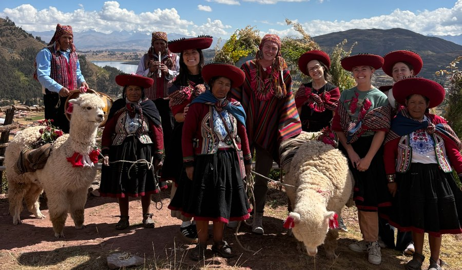
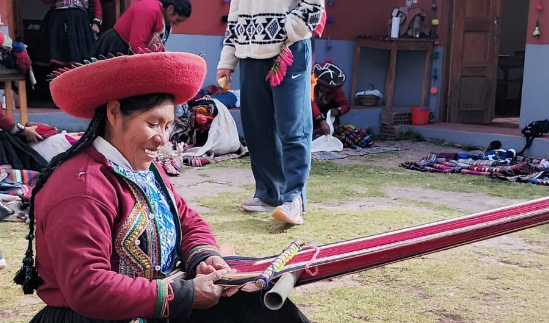
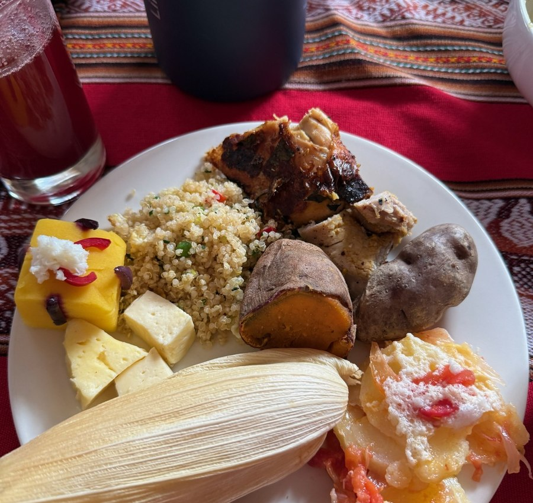
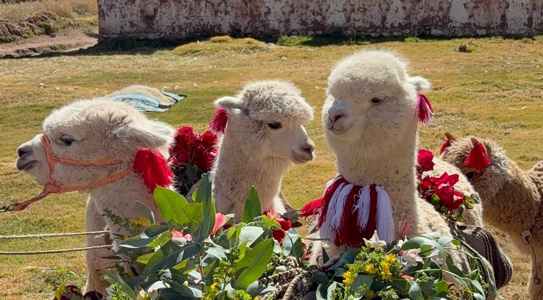

A guided, hands-on afternoon moving through four parts of Quechua daily life and craft.

Before anything else, you'll be dressed in traditional Quechua clothing by your hosts — hand-woven ponchos and llicllas, wide pollera skirts, and a montera hat particular to the Cusco highlands. Each piece is explained as it's put on: the colors and patterns woven into the fabric aren't just decoration, they identify the community that made them and carry meaning passed down through generations.
It's a slower, more personal introduction to Andean culture than simply looking at textiles in a shop window, and it sets the tone for the rest of the afternoon.

Once dressed, you'll sit with local weavers as they demonstrate the backstrap loom, a technique little changed since Inca times. The loom is tied around the weaver's waist, and her own body becomes part of the tension system that holds the threads taut.
You'll see how raw wool becomes yarn using a pushka, a hanging drop spindle unique to Quechua textile tradition — spun by hand and dropped to twist the fiber into thread. From there, that yarn becomes pattern, thread by thread — and you're welcome to try both techniques yourself under guidance. A few minutes at the loom gives you a real appreciation for the textiles you may take home.

After the weaving demonstration, you'll sit down to a traditional pachamanca — a meal slow-cooked underground with heated stones, prepared the way it has been in Cusco households for generations, using local potatoes, corn, and other Andean ingredients.
This isn't a restaurant service — it's a shared table, cooked and served by the same family that has welcomed you into their traditions all afternoon. It's a chance to slow down, ask questions, and talk with your hosts about daily life in the highlands.

The visit closes with time among the llamas and sheep that provide the wool used in the weaving you just watched. You can feed them, take photos, and learn how the animals are cared for and shorn.
It's the moment that closes the loop between the fiber, the loom, and the finished textile — and for many visitors, especially children, it's the highlight of the afternoon.
See pricing, check availability, and book your visit directly with Amandina.